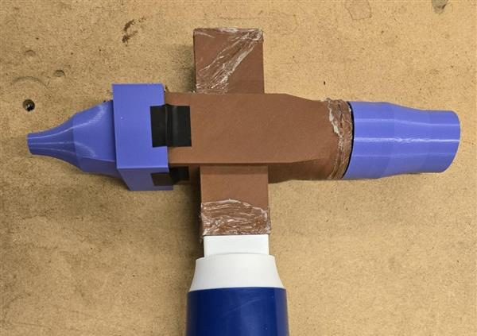
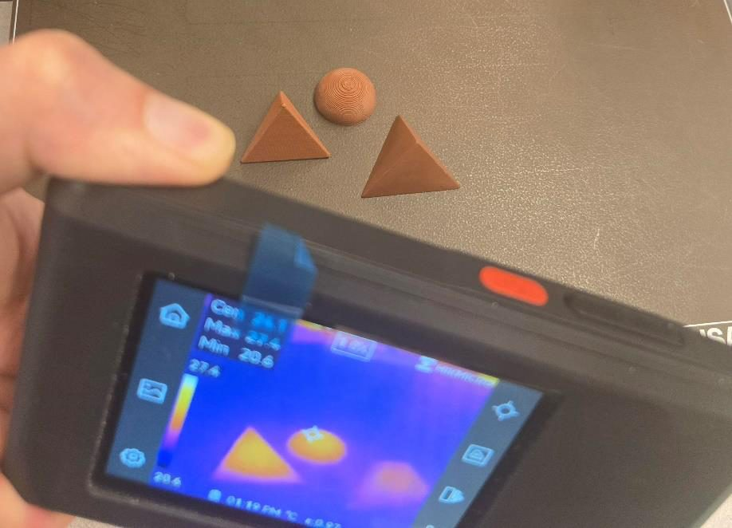
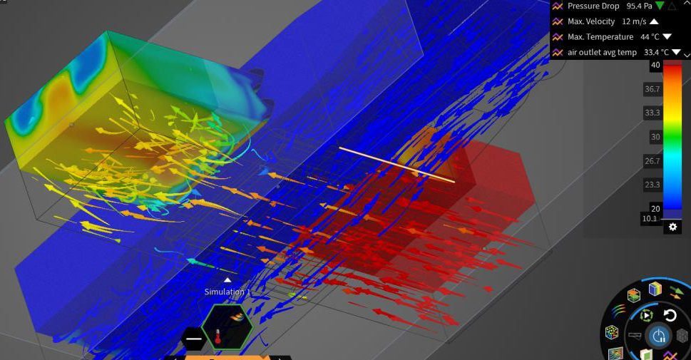

Case Study · Published by Ansys
3D-Printed Compact Heat Exchanger
A cross-flow heat exchanger printed in copper-filled PLA, measured on the bench, and then rebuilt as a conjugate heat transfer simulation in Ansys Discovery — with the gap between the two treated as the interesting part rather than something to hide.



The build
The exchanger is a cross-shaped part with two overlapping but independent channels — the larger one carries water, the smaller one carries air — printed in a copper-filled HTPLA filament. Everything around it is printed too: a TPU buffer so the brittle circular inlet doesn't fracture when the faucet adaptor is forced on, a faucet adaptor sealed with 1 mm O-rings, a flow restrictor that backs the water up until it fills the whole channel, and an adaptor that mates a hairdryer to the air channel.
The experiment
- Water flow was calibrated by opening the faucet until the channel filled without overflowing, then marking the lever position and weighing timed catches to get mass flow rate.
- Air velocity was measured with an anemometer, thermocouples read air inlet and outlet temperature, and readings were only taken once the rig reached steady state.
- Across 30 s of stabilised data the air dropped from 41.1 ± 0.4 °C to 22.2 ± 0.4 °C — a roughly 20 °C drop, against 10 °C water in.
Characterizing a filament nobody had data for
Discovery needs density, thermal conductivity and specific heat, and the filament vendor published almost none of it. Density came from the vendor (2300 kg/m³) and specific heat from a mass-weighted rule of mixtures over the 60 wt.% copper / 40 wt.% HTPLA blend, giving roughly 950 J/kg·K.
Conductivity had to be measured. Three specimens — an irregular tetrahedron, a semi-sphere and a regular tetrahedron — were printed at 100% infill, set on a print bed held at 50 °C, and watched with a thermal camera for ten minutes. The same setup was rebuilt in Discovery with a monitor on the spot the camera was reading, and the conductivity was tuned until the simulated curve fell onto the logarithmic trend the real specimens followed. That put the filament at about 0.7 W/m·K.
The simulation
- Both fluid domains were pulled off the CAD with Discovery's Volume Extract tool.
- Inlets were switched from velocity to mass flow rate and fed the experimentally measured values; the air channel was reassigned from the default water to air gas, and the solid to the user-defined Cu-PLA.
- A solid thermal convection boundary of 10 W/m²·°C at 22 °C represented the room.
- Mesh was 0.4 mm globally with a 0.2 mm local refinement across the central fins, where the gradients are steepest. Monitors sat on construction planes cutting the air domain near the inlet and outlet.
Where experiment and simulation disagreed
The simulation predicted roughly a 10 °C air temperature drop against the 20 °C measured on the bench. Rather than tuning until the numbers matched, the study works through why:
- Porosity. FDM layers leave microscopic defects, especially at the temperatures copper filament needs — enough for the two fluids to touch, which cools the air further than conduction alone would.
- Evaporative cooling and backflow. Water trapped in the print absorbs latent heat as it evaporates, and ambient air drawn back into the outlet drags the near-boundary readings down.
- Turbulence modelling. The k-omega SST model idealises what is genuinely messy flow, and it assumes perfectly smooth walls — an FDM surface is anything but.
- Measurement. A thermocouple sitting halfway into the air inlet disturbs the very flow it is measuring; the simulation's monitors don't. Early runs were also thrown off by water that hadn't settled to a constant 10 °C.
- Geometry drift. The simulated air outlet was 0.000595 m² against 0.000567 m² on the real part — a larger outlet passes more air and shows a smaller temperature change.
The finding that mattered
The most useful result wasn't a temperature at all. The first pass estimated air mass flow from the hairdryer's own outlet velocity — reasonable in isolation, but wrong here, because attaching the exchanger creates backpressure that throttles the flow. Re-measuring velocity at the exchanger outlet, using that channel's cross-section and correcting air density for the elevated temperature, pulled experiment and simulation far closer together. Boundary conditions aren't context you set once; the system reshapes them.
What the simulation showed that the bench couldn't
Past the heat transfer zone the air behaves like it's leaving a venturi — compressed high-speed flow ejects from the thin gaps and collides with near-stagnant air, throwing two large eddies against the top and bottom of the channel with a relatively stable vortex holding at the centre. The 33.4 °C iso-surface comes out visibly non-uniform across the outlet, which is a good explanation for why a single thermocouple reading was never going to be the whole story.
The case study closes by opening out into a design problem: not just maximising heat transfer, but trading it off against the pressure loss that comes with it — which is the shape of most real thermal-fluid work.